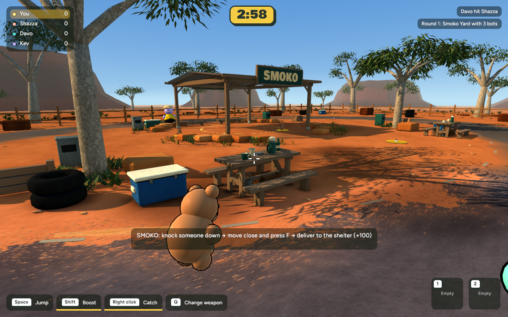
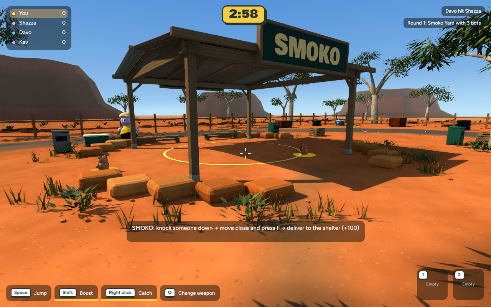
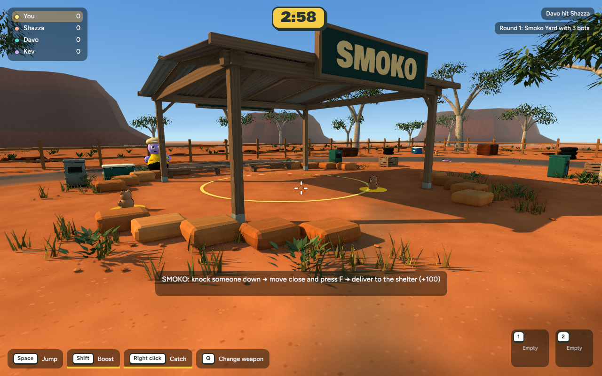
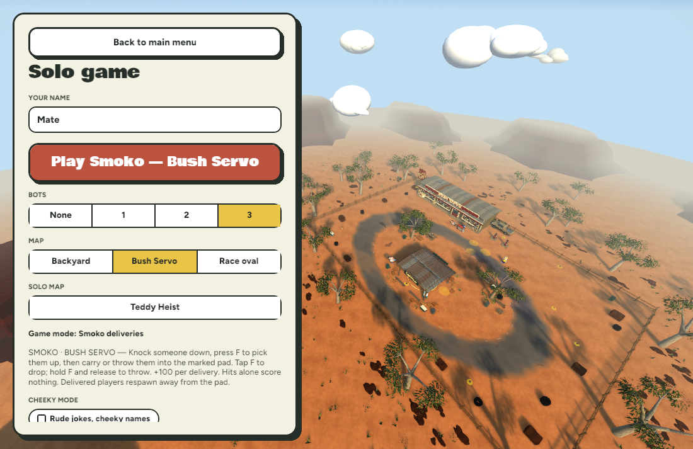
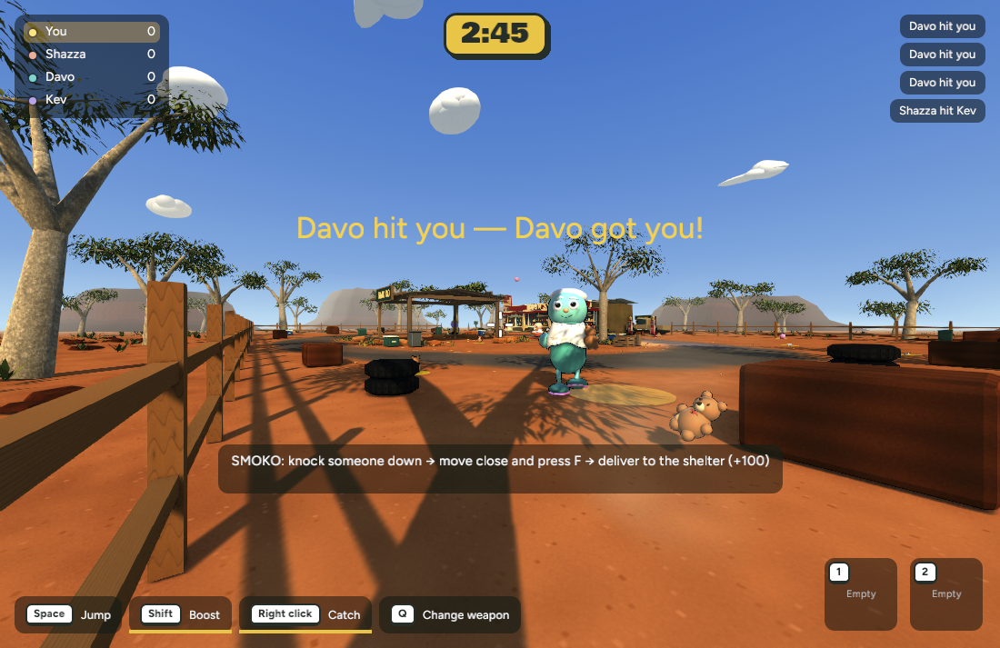

A small step toward the Bush Servo concept: lower amber sunlight, warmer ground bounce, more readable shade, and a slightly richer warm/cool palette. All images are actual game captures, not concepts.
The before views are the previous Smoko lighting pass, captured from these same camera positions. The after views were captured from the current native release at the matching camera positions. Other scene details and gameplay were left alone.



Actual Chrome WebGPU map selection preview from the private build:

Actual solo Chrome WebGPU capture after starting Smoko Yard:

Short browser sample: 601 frames over 8 seconds, mean 13.313 ms, p95 14.3 ms, no frames over 33.3 ms (about 75 FPS, refresh-limited). See the measurement details.
See the earlier colour-grade pass and the Bush Servo concept art. Performance readings and recovery instructions are in the checkpoint.